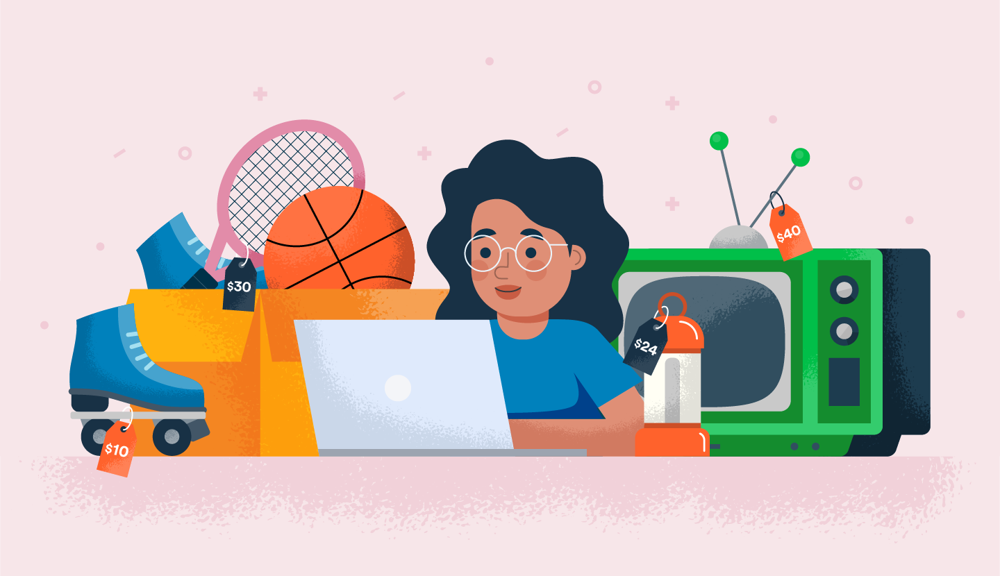
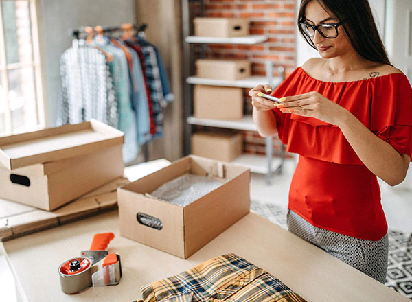

How to Start your own online garage sale

During this time in the pandemic, people are finding different ways to cope, and make a living. This has been the longest time that we stayed inside our houses. We are able to do the things that we planned to do that we didn't have time before, but now that we are just in our houses we have free time to do so. Have you ever looked at your closet or cabinets and think that you have so much stuff that you don't even use? or that could be used by other people? Why don't you start your own garage sale online?



- Prepare things to sell
- Find a platform and make an account
- Take Good Pictures
- Write a Detailed Description
- Set Boundaries
Things that you need:
- Select the item you want to sell online, clean and sanitize them. It's important to properly sanitize everything especially with the risk of being exposed to different bacterias and viruses that could harm our immune systems.
- It could be your personal account or you could make a seperate account for your "shop". Having an account for differnt platforms are better to reach more people.
- Having good pictures of your products can show visually the items and it's present condition. Lighting is important, have different angles, to show the whole product even just virtually.
- In posting your products, write its name, brand, purpose of selling, current condition, if it has damages, include it too. Add tags or hashtags and categories to make it visible to those who are using those tags.
- Bargaining is not new in selling non-commercially. Having a great deal feels like a win for us. But it is also important to set baoundaries and know the value of what you are selling. State your conditions to your buyer before finalizing an order to prevent miscommunications. Through ensuring boundaries you are not only protecting yourself and shop's reputation, but also the customers trust.